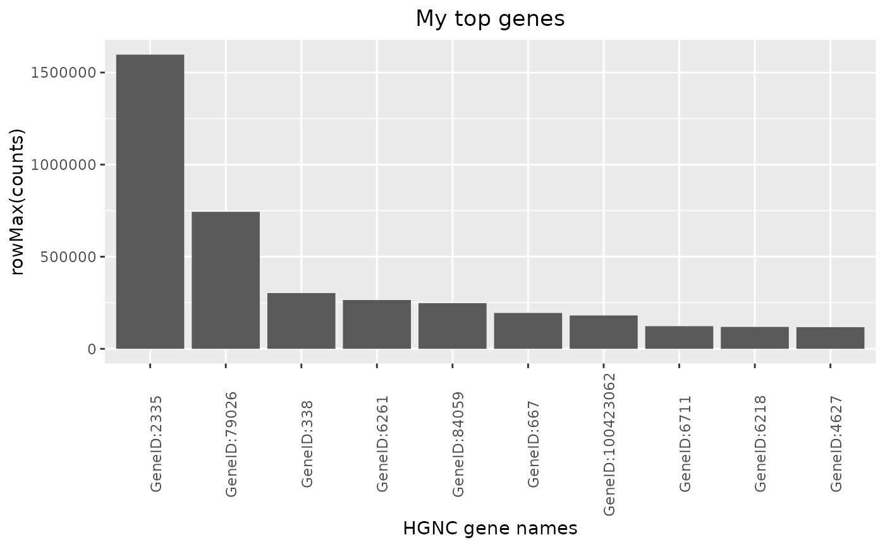

![[Experimental]](figures/lifecycle-experimental.svg)
top_genes() creates a HermesDataTopGenes object, which extends data.frame. It
contains two columns:
expression: containing the statistic values calculated bysummary_funacross columns.name: the gene names.
The corresponding autoplot() method then visualizes the result as a barplot.
top_genes( object, assay_name = "counts", summary_fun = rowMeans, n_top = if (is.null(min_threshold)) 10L else NULL, min_threshold = NULL ) # S4 method for HermesDataTopGenes autoplot( object, x_lab = "HGNC gene names", y_lab = paste0(object@summary_fun_name, "(", object@assay_name, ")"), title = "Top most expressed genes" )
Arguments
| object | ( |
|---|---|
| assay_name | ( |
| summary_fun | ( |
| n_top | ( |
| min_threshold | ( |
| x_lab | ( |
| y_lab | ( |
| title | ( |
Value
A HermesDataTopGenes object.
Details
The data frame is sorted in descending order of
expressionand only the top entries according to the selection criteria are included.Note that exactly one of the arguments
n_topandmin_thresholdmust be provided.
Functions
autoplot,HermesDataTopGenes-method: Creates a bar plot from a HermesDataTopGenes object, where the y axis shows the expression statistics for each of the top genes on the x-axis.
Examples
object <- hermes_data # Default uses average of raw counts across samples to rank genes. top_genes(object) #> Object of class "HermesDataTopGenes" #> expression name #> GeneID:2335 390085.60 GeneID:2335 #> GeneID:79026 302684.20 GeneID:79026 #> GeneID:4627 60247.10 GeneID:4627 #> GeneID:667 59502.90 GeneID:667 #> GeneID:26986 58479.75 GeneID:26986 #> GeneID:6218 57782.15 GeneID:6218 #> GeneID:6205 50484.85 GeneID:6205 #> GeneID:811 42460.70 GeneID:811 #> GeneID:23215 41407.95 GeneID:23215 #> GeneID:4035 35884.20 GeneID:4035 #> Slot "summary_fun_name": #> [1] "rowMeans" #> #> Slot "assay_name": #> [1] "counts" #> # Instead of showing top 10 genes, can also set a minimum threshold on average counts. top_genes(object, n_top = NULL, min_threshold = 50000) #> Object of class "HermesDataTopGenes" #> expression name #> GeneID:2335 390085.60 GeneID:2335 #> GeneID:79026 302684.20 GeneID:79026 #> GeneID:4627 60247.10 GeneID:4627 #> GeneID:667 59502.90 GeneID:667 #> GeneID:26986 58479.75 GeneID:26986 #> GeneID:6218 57782.15 GeneID:6218 #> GeneID:6205 50484.85 GeneID:6205 #> Slot "summary_fun_name": #> [1] "rowMeans" #> #> Slot "assay_name": #> [1] "counts" #> # We can also use the maximum of raw counts across samples, by specifying a different # summary statistics function. result <- top_genes(object, summary_fun = rowMax) # Finally we can produce barplots based on the results. autoplot(result, title = "My top genes")  autoplot(result, y_lab = "Counts", title = "My top genes")